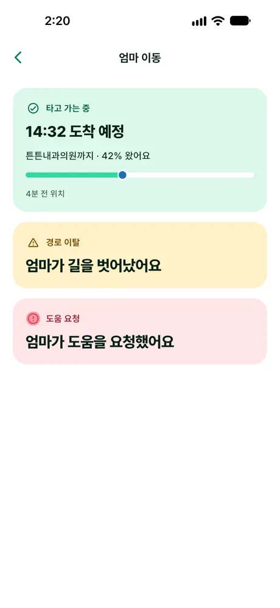
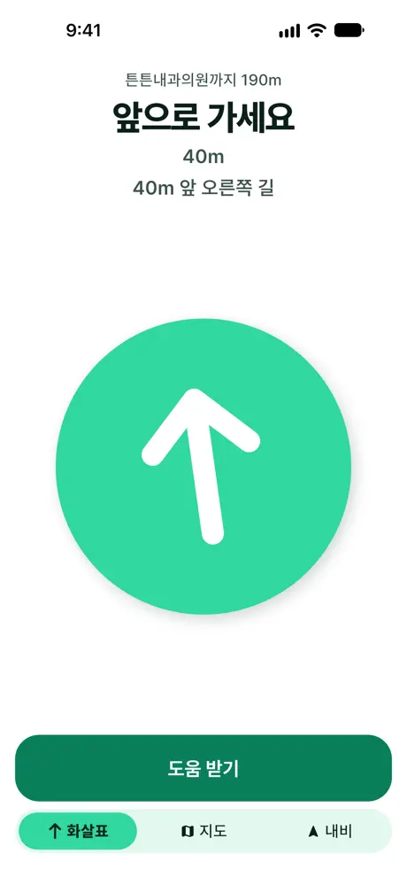
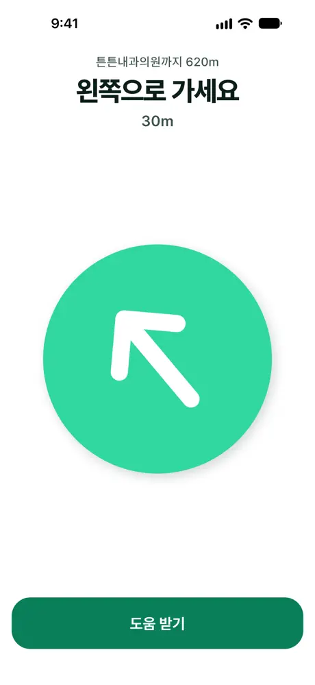
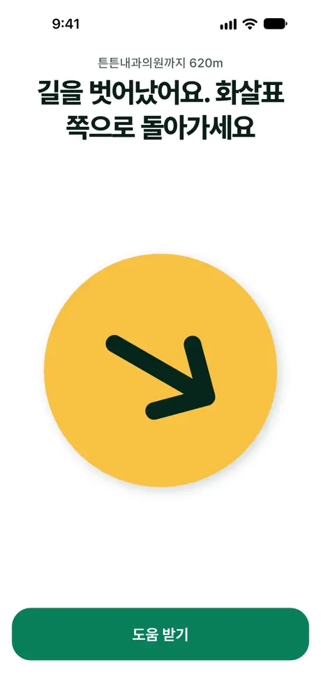
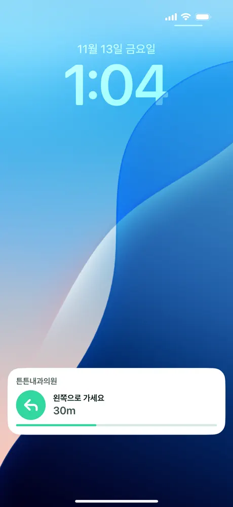
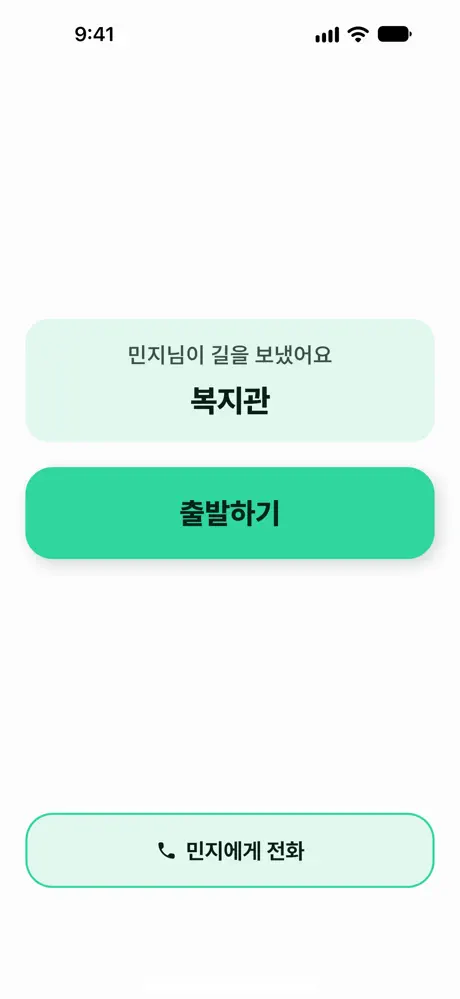
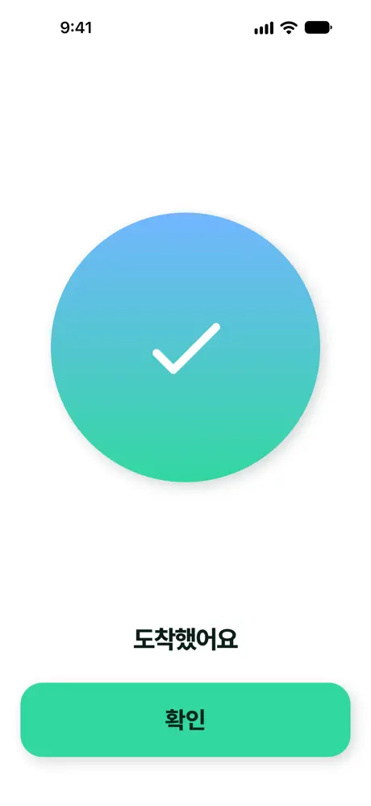

QR로 연결하고 길을 보내요
길을 안내받을 분이 보호자 휴대폰의 QR을 스캔해 연결해요. 보호자는 목적지를 정해 길을 보낼 수 있어요.
가족을 위한 쉬운 길 안내
보호자가 길을 보내면 큰 화살표와 음성으로 안내해요.
출발부터 도착까지, 서로의 안부를 확인할 수 있어요.


Follow ME를 만든 이유
지도가 낯선 어르신이나 어린이에게는 처음 가는 길이 어렵게 느껴질 수 있어요. Follow ME는 가족이 길을 보내고 도착을 확인할 수 있도록, 길 안내와 위치 공유를 한곳에 담았어요.
사용 방법
길을 안내받을 분이 보호자 휴대폰의 QR을 스캔해 연결해요. 보호자는 목적지를 정해 길을 보낼 수 있어요.
화살표와 음성, 진동으로 다음 방향을 알려줘요. 버스나 지하철을 탈 때도 타고 내릴 곳을 안내해요.
안내가 진행되는 동안 보호자는 현재 위치와 도착 예정 시간을 볼 수 있어요. 목적지에 도착하면 알림을 받아요.
앱 화면
모퉁이에서는 다음 방향을 크게 표시해요. 길을 벗어나면 화살표와 음성으로 돌아갈 방향을 알려줘요.


다음에 어느 방향으로 갈지 iPhone 잠금화면에서 확인할 수 있어요. Apple Watch에서도 안내를 볼 수 있어요.

목적지에 도착하면 큰 체크 표시로 알려줘요. 보호자가 연락처를 등록했다면 앱에서 바로 전화할 수 있어요.

